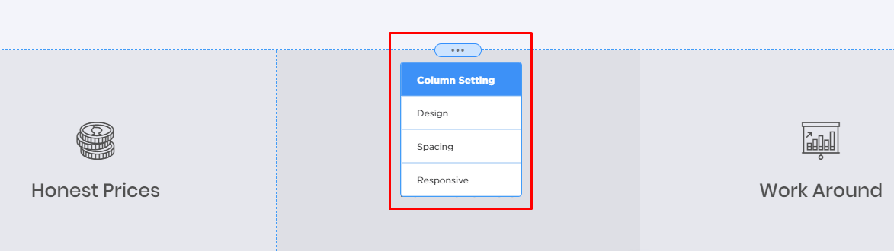
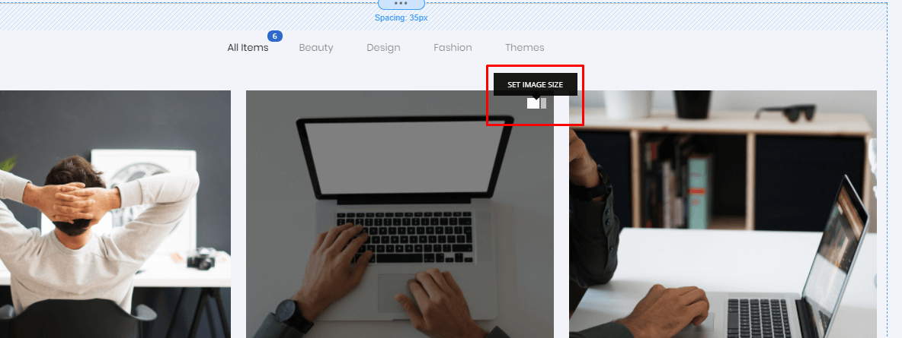

Massive Dynamic
WordPress Website Builder
- by: PixFlow
- email: help@pixflow.net
From all members of PixFlow team, we would like to thank you for purchasing Massive Dynamic WordPress theme. It an honor to help you build your awesome website. If you have any questions that are beyond the scope of this help file, please feel free to contact us via our help center.
Requirements
Massive Dynamic is a WordPress theme, so you need to install WordPress first. If you need information about installing WordPress, please visit this page: http://codex.wordpress.org/Installing_WordPress
To use Massive Dynamic, you need PHP 5.3 or higher and WordPress 4.6 or higher installed on your server.
What’s Included
When you download the complete theme package which includes all files and documentation, you get a .zip file with everything inside it.
Contact Form Templates: This folder includes text files which contain contact form templates.
Documentation: This folder contains Massive Dynamic’s documentation. Other plugin documentations are also here.
Licensing: This folder contains text files for licensing.
massive-dynamic.zip: This is the WordPress theme file, you should use it for installing the theme. Also all the files for importing demo websites are integrated in this file.
massive-dynamic-child.zip: This is the child theme file. If you want to customize our theme, install and use this file.
Plugins
When you install Massive Dynamic, a message appears in admin dashboard of WordPress and asks you to install required and recommended plugins. Some of these plugins are included in massive-dynamic.zip file and some of them are on WordPress plugin repository. Here is a brief description of each plugin that appears in the message:
WPBakery Visual Composer: This a premium plugin for adding content and creating layout in pages. If you want to use a back-end builder, you should install this plugin.
Contact Form 7: This is a free plugin for creating contact forms in WordPress. You need to install this plugin for using contact form shortcode.
Go Pricing: A premium plugin for creating price tables.
MailChimp for WordPress Lite: This plugin helps you create subscribe forms. For using subscribe shortcode, you need to install this plugin first.
Master Slider: Great premium plugin for creating sliders in a WYSIWYG environment.
Revolution Slider: A popular and powerful premium plugin for creating sliders. Most sliders on our demo websites are using this plugin.
Share Buttons by AddToAny: A great plugin for sharing your content on social networks. To share blog and portfolio posts, you need to install this plugin.
WooCommerce: One of the best plugins on WordPress platform. If you want to start an online shop, you need to install this plugin first, also product and product category shortcode work with this plugin.
**Important: Please note that you don’t need to install all these plugins. In fact, installing all of them together, might increase the load time of your website.
Installation
You can use two methods for installing the theme.
Using FTP for installing the theme
-
Download installable WordPress file from themeforest.net and unzip it to get "massive-dynamic" folder
-
Upload “massive-dynamic” folder via FTP to [wordpress folder] /wp-content/themes/ on your server
-
After uploading the theme, you should change permissions for “massive-dynamic” folder to read/write on Windows servers. On Linux servers, set the CHMOD to 755 for folders and 644 for files
-
In WordPress dashboard go to “Appearance > Themes” and activate “Massive Dynamic” by clicking the “Activate” button.
Installing the theme from WordPress dashboard
-
Download installable WordPress file from themeforest.net
-
In WordPress dashboard go to “Appearance > Themes”
-
Click “Add New” on top
-
Click “Upload Theme” on top
-
Select “massive-dynamic.zip” and upload it
-
Activate Massive Dynamic in the end
After installing Massive Dynamic, you have two options for creating your website:
-
Importing a pre-made website using Demo Importer feature of Massive Dynamic and building upon it.
-
Start building your website from scratch
Importing a demo website
-
Click on "Site setting"
-
Click on "Import Template" button on top
-
Choose your desired demo
-
In demo detail popup, choose the options for importing a demo website. You can import Settings, Widgets, Content and Media. Settings includes all the settings that can be set through Massive Builder's left sidebar options. Content includes pages, blog posts, portfolio posts, WooCommerce products, Contact forms, Revolution slider slides and more.
-
Make sure you have installed the required plugins before. Shop demos require WooCommerce plugin. Almost all demos require Contact form 7. Demos with sliders need Revolution slider. If you forgot to install a required plugin, demo importer will ask you to install it first.
-
Choose "Yes, I'm sure about this" and click on "Import Demo" button
-
When import process is completed, a message will appear on screen and refreshes the page
-
When builder is reloaded, if you couldn't see the header menu, you should set it manually. To do that, go to "Massive builder > menus", choose the imported menu and set it as primary and mobile navigation
Massive Builder
In Massive Dynamic, almost everything happens in Massive Builder (except adding new posts, pages, portfolios and those kind of stuff). So you don't have to move around WordPress and choose different options in different places. To access Massive Builder, you can go to WordPress dashboard and click on “Start Now” button.
When Massive builder loads, your work space looks like this:
And here is the Site settings environment:
Let's start with Site Settings environment. Massive builder is consists of 4 major areas:
-
Website layout and options
-
Add element button
-
Toolbar on top
In following sections, we will check all the options in website settings.
General Options
General includes 6 sections.
Site Layout
Site Width: Use this option to change the width of your website. This width will affect all sections of your website like header, content section and footer.
Top Space: This option will add a space on top of your website. It works best if you give your website a background.
Front Page
Front Page Type: Use this option to change type of your home page, If you select “A static page” you will see these options:
Front Page: choose a page as a home page.
Posts page: choose a page as a blog page.
Background
Background options are the same for main section, header, footer and sidebar.
Background: You can choose to enable or disable the background for body of the website.
Color: You can choose between solid or gradient color for background. Gradient gives you 3 options for creating a gradient color.
Image: If you choose image, you can upload an image for background.
Here are available options for background image:
Repeat: “No repeat” will not repeat the background image if it’s smaller than the element which contains the background. “Repeat All” will repeat the image in both horizontally and vertically directions. Repeat horizontally and repeat vertically are obvious.
Size: “Stretch” will fit the background image to background holder while ”Normal” will display the real size of images.
Movement: If you choose “Scroll” the background scrolls along with the element, while choosing the “Fixed” option fixes the background with regard to the viewport.
Position: Indicates the starting position of background image, works best if the image is smaller than background holder element.
Opacity: You can change the opacity of background image.
Color Overlay: Gives you the option to enable or disable the overlay. This overlay appears on top of background image and can be solid or gradient.
Texture: You can choose this option to use texture background for your website. You can also change texture’s opacity and add an overlay on top of it.
Portfolio Detail
Accent Color: you can set accent color for portfolio details here. You can open a portfolio detail which uses static layout and change the accent color to see how it works.
Custom CSS
You can add your custom styles here. Please note that after you’ve added the styles, you should save your modifications and refresh the page.
Custom JS
You can add your custom script here. Please use your scripts without <script></script>, also after you’ve added the scripts, you should save your modifications and refresh the page.
Header Options
Header options are consist of 7 different sections.
Header Layout
Header Position: Here you can choose to have top header or side header.
Header Width: Use this option to change header’s width.
Header Height: Use this option to change header’s height.
Container Width: Container is an invisible box inside header, it gives you the option to have a full-width header with boxed content holder inside it. It’s also a good option for creating a space between header edges and the content holder inside it.
Top Space: You can use this option to make a space between header and top of your website.
Header Styles: You can choose 5 major styles for top header and 2 styles for side header, some of those styles have different types. Try playing around with different styles and choose the right style for your website.
*Please note that some of header styles do not support item resize functionality. Also if you changed header style and it didn’t display header items correctly, you need to go to header > appearance and change items color.
Header Scroll Behavior: In Massive Dynamic, you can choose a functionally for header, this functionality triggers after you scroll down or scroll up. “Don’t Move” will disable this functionality, “Move” will stick the header to it’s current position and resize it, “Appear After” give you the option to display the second header after a specific amount of scrolling. Last choice, provides two options to choose second header’s animation style and to define the distance for displaying the second header.
Navigation Item Style: Here you can choose between text, icon and a combination of both. This option will change the appearance of header navigation.
Header Appearance
Based on the scroll behavior functionality, you might have secondary header styles here.
Item’s Color: Use this option to change the color of header items.
Item’s Hover Color: When you move your mouse over items, this color will be shown.
Bg Type: It’s the background color of header, it can be solid or gradient.
Logo Style: You can choose dark logo for header with light background or choose light logo for header with dark background. You can upload these logos in branding option.
Header Border: Header border will add a border to bottom of header, it's useful for having a transparent header. Header will automatically get a border if you choose wireframe style for classic top header.
Popup Styles: This option only appears if you have chosen header gather style. It gives you the option to choose popup element’s color and background color.
Menu Button
Button menu items are only available in top classic header with style set to none.
To have buttons in header, you should navigate to “WordPress dashboard > appearance > menus”. Then click on a first-level menu item and choose "turn to button" option and save.
Menu button style: Choose between 4 different available styles for menu button(s).
Fill Color: It’s the background color of menu button.
Text Color: It’s the text color of menu button.
Hover Fill Color: It’s the background color of menu button when you move your mouse over it.
Hover Text Color: It’s the text color of menu button when you move your mouse over it.
Drop Down & Megamenu
Here you can change the appearance of header drop downs.
Style: Use this option to change drop downs item style
Background Color: Use this option to change the background of drop downs.
Heading Color: If you use mega menu, this color will be assigned to mega menu headings.
Element’s Color: Use this one for changing the color of text and icons in drop down.
Element’s Hover Color: When you move your mouse over an item in drop down, this color will be used.
Business Bar
You can use this section to display your contact information on top of your website.
Info Style: Contact information in business bar can be displayed with icons or dots.
Social Style: Social items in business bar can be displayed in text or icon format.
Element’s Color: Use this option to set a color for all elements in business bar.
Background Color: Use this one for changing the background color of business bar.
Address: Use this option to display your address in business bar.
Tel: Use this option for putting your phone number in business bar.
Email: This option is used for adding email address in business bar.
Typography
Header texts can have a unique typography.
Font Type: You can choose between Google fonts and custom fonts. If you choose custom font option, you can upload your font using a file uploader.
Font Family: Choose a google font family for texts in header.
Size: Set a font size for header elements.
Weight: Choose the weight for google font you are using in header. Please note that only this variation of font will be loaded on your website.
Letter Spacing: Choose the space between letters here.
Italic: Choose to have italic text or not.
Responsive
Here you can choose options for website header in responsive view.
Header Skin: Dark header has light elements, while light header has dark elements.
Logo Skin: Choose dark logo for light header skin and light logo for dark header skin. You can upload this logos in Branding options.
Header Item’s Size & Position
You can resize icon, navigation or notification section in header. When you are in Site settings environment move your mouse over the related handles and resize the sections. You can also change their position by drag & dropping the sections.

Content Options
Main Layout
Main is the section between website header and footer, while Container is an invisible box inside Main section.
Container Width: All container sized rows(it’s an option in row shortcode) will use this size.
Top Padding: Use Top Padding to add a space between Main section and top header.
Sides Padding: Use Sides Padding to add a space between Main section and side header.
Main Width: You can change main section’s width here, it can not be bigger than website’s width. All full-width rows(it’s an option in row shortcode) will use this size.
Background
You can choose a solid or gradient background for main section.
Please note that you won't see the background unless you set the row's background to transparent. To do that, move your mouse over a row, click on Row Settings, set Row Type on Solid Color, then go to BG tab and click on color picker, reduce opacity to zero and press the update button.
Footer Options
Footer Layout
Footer section divides to widget area and copyright area. You can change each section’s height using Widget Height and Copyright Height.
Widget Height: Set the height of widgets in widget area.
Copyright Height: Set the height of copyright area in footer.
Footer Width: Use this setting to have a full-width or boxed footer.
Container Width: Using this option, you can add some space between footer edges and the content inside it.
Top Space and Bottom Space: You can use Top Space to add a space between footer and main section, also you can add a space after footer using Bottom Space.
Appearance
Widget Styles: You can change the appearance of footer widgets here.
Footer Parallax: Please note that this option works best if Footer and Main section have the same width, for example both are set on 100 percent width. Also if you enable this option, top and bottom space will be removed from footer layout. After enabling footer parallax, scroll up and down to see the effect on footer.
Widget Skin: Choose dark or light skin for widgets.
Widget Background: You can choose a background color for widgets here.
Copyright Element’s Color: Choose a color for items in copyright area.
Copyright Background Color: Choose a background color for copyright area.
You can have a separator on top of footer.
Separator Height: Set the height of footer separator in pixels.
Separator Background Color: Set the color of footer separator.
You can also use a background image or background texture for footer.
Image: If you choose image, you can upload an image for background.
Here are available options for background image:
Repeat: “No repeat” will not repeat the background image if it’s smaller than the element which contains the background. “Repeat All” will repeat the image in both horizontally and vertically directions. Repeat horizontally and repeat vertically are obvious.
Size: “Stretch” will fit the background image to background holder while ”Normal” will display the real size of images.
Movement: If you choose “Scroll” the background scrolls along with the element, while choosing the “Fixed” option fixes the background with regard to the viewport.
Position: Indicates the starting position of background image, works best if the image is smaller than background holder element.
Opacity: You can change the opacity of background image.
Color Overlay: Gives you the option to enable or disable the overlay. This overlay appears on top of background image and can be solid or gradient.
Texture: You can choose this option to use texture background for footer. You can also change texture’s opacity and add an overlay on top of it.
Widget Area
You can enable or disable the widget area, if you enable it, you’ll have an option to choose the number of columns in widget area.
Copyright Area
Style: You can choose linear or centered style for copyright area.
Copyright Text: This is your website's copyright text. It will be shown in footer, or side headers.
Copyright Area Items: Choose to show or hide different items of copyright area.
Logo Skin: Choose dark logo for footer with light background and choose light logo for a footer with dark background. You can upload logos in Branding options.
Logo Opacity: Change footer logo’s opacity here.
Go To Top Button
If you enable go to top button, you have two options. Choose it’s skin and set a distance which the button appears after that.
Sidebar Options
In Massive Dynamic you have 4 different sidebars. Page sidebar, post sidebar, shop sidebar and main sidebar. Page sidebar only appears in pages, shop sidebar only appears in shop pages, main sidebar only appears in blog and archive page and finally post sidebar appears in single blog pages. Since they have same settings, only one sidebar is explained here.
You can enable or disable sidebar using the on/off switch and choose the position for sidebar.
Sidebar Width: Use this controller to change the width of sidebar.
Element’s Skin: You can set light skin for sidebars with dark background and vica versa.
Widget’s Style: You can choose boxed or border style for widgets in sidebar.
Alignment: Set the alignment for elements in sidebar.
Background: You can choose to enable or disable the background for sidebar.
Color: You can choose between solid or gradient color for background. Gradient gives you 3 options for creating a gradient color.
Image: If you choose image, you can upload an image for background. Here are available options for background image:
Repeat: “No repeat” will not repeat the background image if it’s smaller than the element which contains the background. “Repeat All” will repeat the image in both horizontally and vertically directions. Repeat horizontally and repeat vertically are obvious.
Size: “Stretch” will fit the background image to background holder while ”Normal” will display the real size of images.
Movement: If you choose “Scroll” the background scrolls along with the element, while choosing the “Fixed” option fixes the background with regard to the viewport.
Position: Indicates the starting position of background image, works best if the image is smaller than background holder element.
Opacity: You can change the opacity of background image.
Color Overlay: Gives you the option to enable or disable the overlay. This overlay appears on top of background image and can be solid or gradient.
Texture: You can choose this option to use texture background for your website. You can also change texture’s opacity and add an overlay on top of it.
Logo & Branding
In branding section of Massive Builder, you can upload 3 logos. Dark logo, light logo and a logo which will be displayed in notification center of your website. It’s suggested to upload a logo with proper size (120x40 pixel or something with similar ratio) for better website load time.
Also you can upload the fav icon here.
Typography
Use typography section to define font family, font size and other attributes of website texts. Please note that these settings will affect most shortcodes except text shortcode, because shortcodes use headings, paragraphs and links in their structure.
We have divided the typography into H1 to H6, paragraphs, links and charset of google fonts. Since they all use the same settings, we explain them once.
Font Type: You can either use Google fonts or user custom fonts. If you choose custom font, a file uploader will appear.
Font Family: Choose your desired google font here.
Size: Set a font size.
Weight: Choose the weight for google font you are using. Please note that only this variation of font will be loaded on your website.
Line Height: Set the line height.
Letter Spacing: Choose the space between letters here.
Color: Set a color for current typography.
Italic: Choose to have italic text or not.
Please note that link settings will not affect the links in shortcodes.
Charset: Here you can choose to load the extra charsets(for example for latin languages) for chosen google fonts.
Social Links
Enter your social network addresses here. Please note that there must be http:// or https:// at the beginning of URLs. All social links(except social links in shortcodes) are created here.
Menus
There are two methods to create and add menus to your website:
-
Menus options in Site Settings environment of Massive Builder
-
WordPress dashboard > appearance > menus
Since the first method is pretty straightforward, we talk about the second method. To create and add a menu to website follow these steps:
-
go to WordPress dashboard > appearance > menus
-
click on “create a new menu” and give a name to menu, then click “Save Menu”
-
next use the left boxes and add items to menu, you can click on added menu items and give them an icon
-
after that check primary and mobile navigation boxes. If you want a different mobile menu, you can create another menu with other items and check mobile navigation for that menu only.
-
Click “Save Menu”
Creating Mega Menu
-
go to menu panel.
-
click on a first-level menu item and check the mega menu option box.
-
now drag & drop menu items under the first-level menu item, give them an indent, so they become the sub-menu of first-level menu item
Notification Center
Notification center is a unique feature which provides access to latest blog posts, latest portfolio posts, search and shop cart. You can change notification center settings from Notification Center options in Massive Builder.
Latest Posts Number: Using these options, you can set the number of latest portfolio and blog posts which will be shown in notification center.
Icon Set: You can select between two different icon styles for notification icons that appear in header..
Skin: You can choose a dark or light skin for notification center popup.
Accent Color: In notification center, some elements have a different color, you can change that color using accent color.
Icon Size: Choose the desired size for notification icons in header.
Blog Posts, Portfolio Posts and Active Tab: You can choose to display latest posts in notification center or not. If you choose to display them, you can set the active tab of notification center on latest portfolios or latest blog posts. Also you can display notification icon in header, when this icons is clicked, it will take you to active tab.
Search and Shop: you can choose to have Search and Shop section in notification center. Also you can choose to display search and shop icons in header.
Creating Pages with Different Settings/Layouts
Any change you make in Site Settings of Massive Builder, will affect all pages of your website. But what if you want to have a page with different settings?
To solve this issue, we introduced general and unique settings. General settings is used for creating a main layout which is used for several pages. If you want to create a page with different layout and settings, then you should switch to unique settings. For example I have a website with 4 pages, home page, portfolio page, contact page and about page. I create home page with general settings and I want portfolio page and about page to look the same, so I simply create two new pages and add my content using Massive Builder. But I want contact page to have a different layout, so I open contact page in Massive Builder, click on Page setting on top toolbar and choose unique setting. From now on, any layout change I make on contact page, will not affect other pages.
Shortcodes & Elements
After choosing the desired site settings, it’s time to add contents to page. To access element, click on Edit Content button in top toolbar of Massive Builder.
When Content Editor environment loads, you can click on element button on left bottom corner of screen, then shortcode panel pops up on left side of screen.You can see the search field, It can help you find shortcodes quickly. Please note that typography options in Site Settings will affect all shortcodes except text shortcode. Now let's get familiar with more complicated shortcodes.
Row Shortcode
Row shortcode is one of the most useful shortcodes in Massive Dynamic. When you drop it in website preview, you can move your mouse over it to access row and column settings.
Move Icon: it appears on top right corner next to other controllers of row shortcode, you can use it to drag & drop the row shortcode.
Setting: This is where all the good things happen! Click it to open row settings panel.
Delete: Use this icon to delete row completely.
Duplicate: You can use it to make a copy of current row.
Save Section: You can use this button to save current row as a section.
Layout: Use this button to change the number of columns in current row. You can use column presets or create a custom layouts. If you want to create a very custom layout, you should use column summation of 12, just like bootstrap.
For example if you want to have col7 + col5 you should enter 7/12 + 5/12 in custom row layout field.
Row Settings Panel - General Tab
Row Background: Here you can choose a type for row background. Your options are solid color, image, color transition, gradient & image and video. Based on your choice, BG tab in row settings will change, you can go there and choose different options for current background type.
Background Width: Full-width size will use main section’s which. You can access both main and container width in Site Settings > Site Content > Main Layout.
Content Width: The options are the same as background width. Using content and background width, you can create a full-width row with boxed content.
Extra Class name : You can add a CSS class name to the this row and add some custom CSS using this class name later.
Fit To Screen: If you choose this option, current row will take the same height as user’s screen height. It’s a great option for first row.
Equalize Column’s Height: When you choose this option, all the columns in this row will have the same height.
Element’s vertical position: Element’s Vertical Position gives the option to arrange element based on the highest column in this row.
Row Settings Panel - BG Tab
Options of this tab will change based on row’s background type.
Solid Color Options
Color: you can choose simple color for background.
Image Options
Color: use this color for overlay color which appears on top of background image.
Image: add an image for background.
Image Position: if you have a row with great height, you can choose to display background image on top or bottom of row, or stretch it to fit the row.
Color Transition will start from begining color and ends on destination color, but colors change if you scroll.
Gradient options are same as image options, but instead of solid color, you can choose gradient background color.
Video Options
webm file URL: add a link to a video file which ends with .webm
MP4 file URL: add a link to a video file which ends with .mp4
Video Preview Image: this image will be shown when the video is not loaded yet.
You can add link to both webm and MP4 file, because none of them are supported in all browsers. Still MP4 has a better support in different browsers.
Row Settings Panel - Design Tab
Inner Shadow: adds an inside shadow to bottom of row
Sloped Edge: creates a crooked triangle on top or bottom of row. You can set its color according to next or previous row’s background color, so it seems like that other row overlapped current row.
Set Parallax: adds parallax functionality to background image. For parallax speed, 1 is the slowest and 10 is fastest. For faster parallax speed, you need a taller image, otherwise the background image will keep repeating.
Row Settings Panel - +URL Tab
You can use this tab for adding an ID to tab for creating one page menu.
How to add a row in menu:
-
First enter a unique ID in URL field, this ID should not be used for any other row in this page
-
Click on generated URL and copy it, then press save changes button
-
In builder's sidebar, click on Menus, then click on your current menu or add a new one
-
Next, click on Add Items and choose Custom Links
-
Paste the generated URL in URL field and give it a name in Link Text field
-
Click on Add To Menu button and refresh your page
Row Settings Panel - Spacing Tab
Here you can add paddings and margins to row.
Column Settings
To access column settings, you can move your mouse over a column and an icon will appear on top of current column. Click it and column settings panel will open.

Here you can find several options for Design, Spacing and Responsive view.
Rich Text Shortcode
Text shortcode seems simple, but it has a lot of options. You can add text to your website using this shortcode.
Design Options
Alignment: you can select text alignment using this option.
Title Line Height: you can set line height for Title text.
Description line Height: you can set line height for the text description.
Title Bottom Space: you can set space between Title and Description.
Description Bottom Space: you can set a space at the bottom of Description.
Separator: you can add a separator line between Title and Description.
Please note that Title bottom space will also affect separator bottom space.
Title Options
Title Style: you can set three different style for title(s). They can be solid, gradient or image. Please note that image only works on Google Chrome.
Letter Spacing: you can set space between letters of Title word.
Hover Letter Spacing: you can set space between letters of Title word on hover state.
Easing: you can set easing for smoothing animation.
Use Custom Font: you can use a custom font for title.
Titles Tab
Here you can determine the number of titles and choose font size.
Button Options
Here you can add a button to text text shortcode.
Button style: You can set button style and button shape in this property
Text: You can set a text for you button by this property
Choose an icon: you can choose an icon for this button.
General Color: choose a color for background of button.
Text Hover Color: choose a color for button in hover state.
Button size: you can set button size by this property.
Button padding: you can set padding for button.
Link URL: you can create a link for this button that when click on it you navigate to the address
Animation Options
Use Animation: you can add animation to the text by choosing “Use Animation” .
Animation delay: you can determine when your animation execute. This property set a delay for executing animation.
Animation From : this property determine the the animation execute from right or left or top or bottom or center.
Animation Type: you can set by this property to how to execute the animation.
Animation Easing: you can determine easing for animation.
Contact Form Shortcode
To use contact form shortcode, you should first install Contact Form 7. When you install Massive Dynamic a message appears in dashboard and asks you to install plugins, You can install Contact Form 7 from there. Please note that if you import one of the pre-made websites, contact forms are included in the imported data.
To import our contact form styles, go to massive dynamic complete package files(you should download complete package from themeforest) and open Contact Form Templates,
locate 'business contact form.txt' or 'classic contact form.txt', copy the text inside it, then go to WordPress dashboard > Contact > add new, give this form a name and replace the text in textarea with the text from text files, now press save. Now you can come back to contact form shortcode and choose the form you've just created.
If you want to edit contact form styles, you can open the page that contact form in Massive Builder and edit the form in contact form settings:
Select Contact form: you can chose a form that is built in Contact Form 7 here.
Title: you can set a title for your shortcode.
Description: you can determine a description for your form using this option.
General Color: you can set a color for your form by this property
Field Background: Choose field color for this form.
Button color: you can set a color for this form’s button.
Button Color Hover: you can set hover color for your form’s button.
Subscribe Shortcode
To use subscribe shortcode, you should first install and configure "MailChimp for WordPress Lite" plugin. This plugin takes your mailchimp API key and connect the form to a list, so you can keep track of your subscribers in mailchimp.
Product & Product Categories Shortcode
To use these shortcode you should install WooCommerce plugin first. You can read this article for getting started with WooCommerce .
Price Table Shortcode
To add cool tables, you need to install Go Pricing plugin first. If you need help for using this plugin, we’ve already added plugin documentations in Massive Dynamic package on themeforest.
Portfolio Posts & Portfolio Shortcode
Creating Portfolio Items
To create new portfolio posts, navigate to WordPress dashboard > Portfolio > add new
-
give a name to this portfolio item
-
add this item to a portfolio skill(category) or create a new skill for it
-
upload a feature image for this item, it’s used as portfolio thumbnail
-
now, for portfolio detail page you can choose premade layout, or create your own layout using back-end editor or Massive Builder
-
in the end, click the publish button
Portfolio Shortcode
Go to Massive Builder and click on shortcode button, then drop a portfolio multi-size shortcode in website preview area. If you have already added some portfolio items, they will be shown in portfolio shortcode. Click on Portfolio Setting Button to open Portfolio setting panel.
Portfolio Multi-Size Settings - General Tab
Meta Position: This option can change portfolio layout completely, having portfolio meta inside or outside portfolio item will give you 2 different layouts.
Category: Choose portfolio categories here. Portfolio shortcode will only display items in those categories, also this option will add the selected categories to portfolio filter.
Enable Filters: Choose to display portfolio filters or not.
Filters Align: Set align for portfolio filters, this option will also affect Portfolio shortcode title.
Item’s Padding: Use this option to create borders between portfolio items.
Open Details: You can link portfolio items to their detail page or open portfolio thumbnails in a popup. Popup will use large size of portfolio thumbnails, so if you want to use popup, try uploading portfolio thumbnails with proper size(1024x656 pixels).
Title: Enter a title which will be shown on top of portfolio shortcode.
Enable Like: Choose to display like option on each portfolio item.
Portfolio Multi-Size Settings - Colors Tab
Title/Filter Color: Choose a color for portfolio filter and title here.
Item Text Color: Choose a color for texts of each portfolio item. You should change this color based on portfolio layout.
Overlay Color: Set the color of overlay which appears on top of portfolio thumbnail. This overlay only appears in inside portfolio.
Portfolio Multi-Size Settings - Item Number Tab
Item Number: Here you can choose the number of portfolio items which will be displayed first, you can add a load more button to display the rest of portfolio items. If you want to display all portfolio items in selected categories, enter -1 .
Load More Button: You can enable Load More Button here. Using the rest of options in Item Number tab, you can choose the appearance of Load More button.
Options in animation tab are the same as other shortcodes.
Resizing Portfolio Items
When you are in Massive Builder, you can move your mouse over portfolio items and a setting icon will appear, move your mouse over it and click on different thumbnail sizes.

Blog Posts & Blog Shortcodes
Creating Blog Page
To create a blog page take these steps:
-
go to WordPress dashboard > pages > add new
-
give this page a name, for example news or blog
-
at bottom of the page, you have an option to enter a subtitle for blog page. when you’ve entered the information click the publish button.
-
now go to Settings > reading > front page displays
-
choose A Static page and select the page you have created as post page
Adding Blog Posts
-
enter a name for post
-
choose a format for post, some formats provide an additional box for adding media. you can read about post formats after “Adding Blog Posts” section
-
add content to post, you can use Massive Builder for this, but post excerpt will not display text correctly if you start content with a shortcode
-
add this post to a category
-
add tags to this post for search purposes
-
add a featured image to this post, it will be used as post thumbnail
-
choose options in Post Setting section. Media Height is the height of media in post detail page, the rest are different sections of post detail page
-
click publish button and your post will be shown in blog page
Post Formats
Standard: This one is a normal WordPress format for blogging.
Quote: You can used this format for making a quote post, Post title will be used for displaying a name for quote and text in editor will be shown as quote.
Video: This post format is for creating a video post, you can enter the youtube or vimeo URL in video URL box below the text editor and enter the description in text editor.
Audio: This post format is for creating a audio post, you can enter the SoundCloud URL in audio URL box below the text editor and enter the description in text editor.
Gallery: This one is like standard post format, but you can display a slider in post detail page. Add slider images in “Featured Gallery” box under featured image box
Adding Blog Posts To Others Pages
To add posts in other pages, you can use 4 shortcodes. All of them are pretty straightforward and are accessible from Elements panel in Massive Builder content editor.